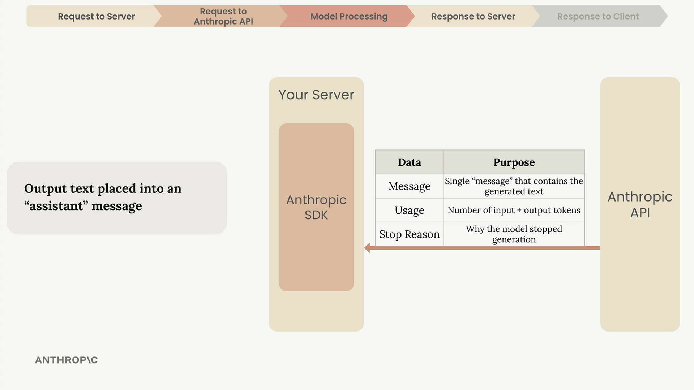
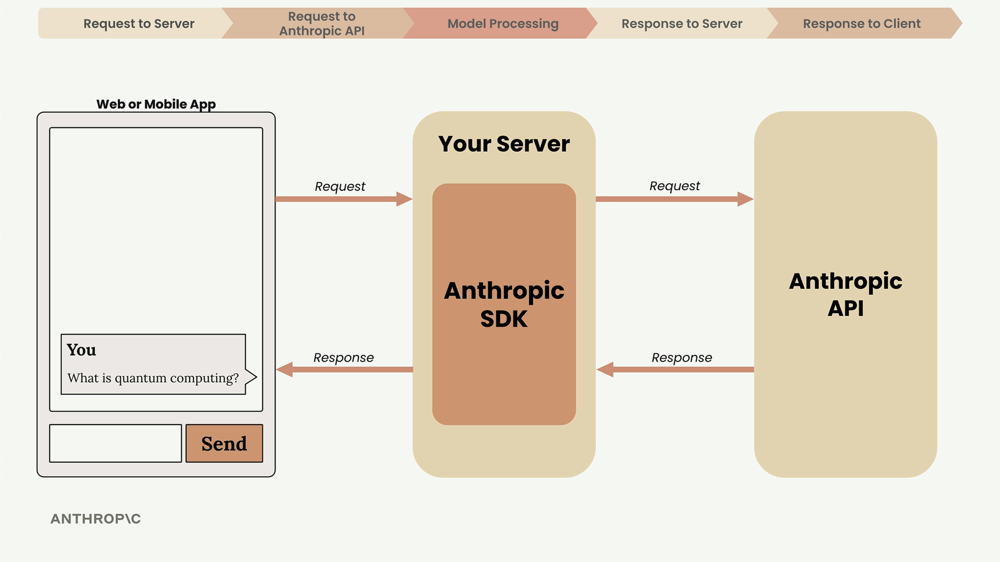

Как устроен запрос
Чему научитесь
5 минут 18 секунд
К концу урока вы сможете:
- пройти путь от кнопки «отправить» до текста на экране;
- назвать обязательные поля запроса;
- перечислить, почему генерация останавливается.
Зачем смотреть весь путь
Видео и схемы урока.
Смотреть урок на Skilljar Accessing the API · 5:18Урок начинается с момента, когда пользователь нажимает «отправить», и доводит до текста на экране. Эта схема нужна, чтобы выбирать архитектуру и понимать, на каком шаге искать ошибку.

Пять шагов
Каждое обращение идёт одним маршрутом: запрос на ваш сервер, запрос в Anthropic API, обработка моделью, ответ серверу, ответ клиенту.

Зачем свой сервер
Из браузера или мобильного приложения в Anthropic API ходить нельзя.
- Запросу нужен секретный ключ.
- Ключ в клиентском коде — дыра.
- Его можно вытащить и слать запросы от вашего имени.
Приложение шлёт текст на ваш сервер. Сервер с уже сохранённым ключом говорит с API.
Как сервер вызывает API
Можно взять официальный SDK или послать обычный HTTP. SDK есть для Python, TypeScript, JavaScript, Go и Ruby.

В каждом запросе есть:
- API Key — чей это запрос;
- Model — имя модели. В тексте урока пример такой:
claude-3-sonnet; - Messages — список с текстом пользователя;
- Max Tokens — потолок того, сколько токенов Claude может сгенерировать.
Что делает модель
Дальше четыре стадии: токенизация, эмбеддинг, контекстуализация, генерация.

Токенизация
Текст режется на токены: целые слова, части слов, пробелы, символы. Урок для простоты предлагает думать «одно слово — один токен».
Эмбеддинг
Токен становится длинным списком чисел: числовым описанием возможных смыслов.

У слова несколько смыслов. Пример урока — quantum:
- дискретная порция физической величины;
- квантовая механика;
- что-то очень малое;
- квантовые вычисления.
Контекстуализация
Список чисел уточняется по соседним словам, чтобы остался смысл этой фразы.

Генерация
Считается вероятность следующего слова. Самое вероятное берётся не всегда: к вероятности добавляется управляемая случайность, поэтому формулировки отличаются. Слово дописывается, и цикл повторяется.

Когда генерация останавливается
После каждого токена проверяется, идти ли дальше.

- достигнут заданный max tokens;
- выдан токен конца последовательности;
- встретилась stop sequence, заранее заданная фраза.
Что в ответе API
- Message — текст;
- Usage — входные и выходные токены;
- Stop Reason — почему остановились.

Сервер отдаёт текст в интерфейс.

Зачем это помнить
- ключ не попадает в клиент;
- лимит токенов подбирается под задачу;
- разные stop reason обрабатываются по-разному;
- поломку ищут по шагу этой цепочки.
Урок говорит не заучивать каждую деталь. Нужны термины и общая схема.
Дальше
Дальше ключ создают в консоли. Без него следующий ролик не запустить.
Оригинал урока: Accessing the API.